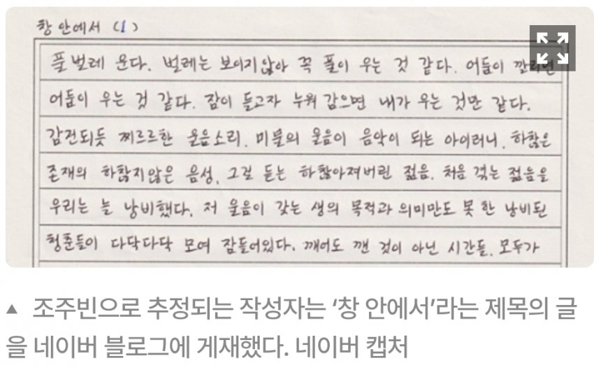
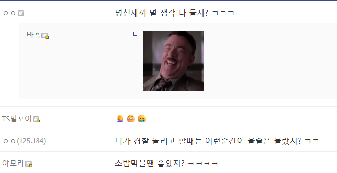

창 안에서 (1)
풀벌레 운다. 벌레는 보이지 않아 꼭 풀이 우는 것 같다. 어둠이 깔리면 어둠이 우는 것 같다. 잠이 들고자 누워 감으면 내가 우는 것만 같다.
감전되어 찌르르한 울음소리. 미물의 울음이 음악이 되는 아이러니. 하찮은 존재의 하찮지 않은 음성. 그걸 듣는 하찮아져버린 젊음. 처음 겪는 젊음을 우리는 늘 낭비했다. 저 울음이 갖는 생의 목적과 의미만도 못 한 낭비된 청춘들이 다닥다닥 모여 잠들어있다. 깨어도 깬 것이 아닌 시간들. 모두가
- 조주빈

니가 만든 피해자들의 울음소리다 씹1새끼야